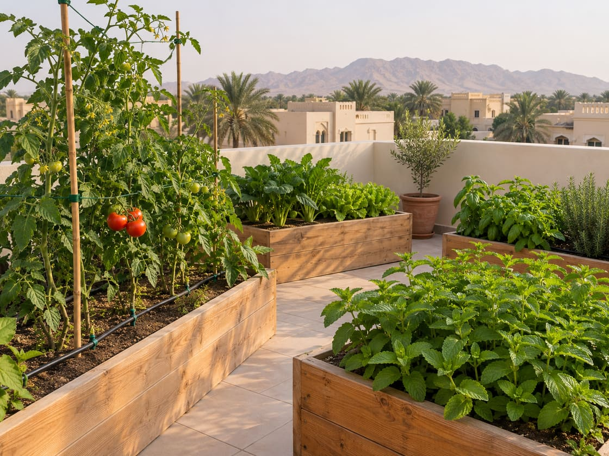
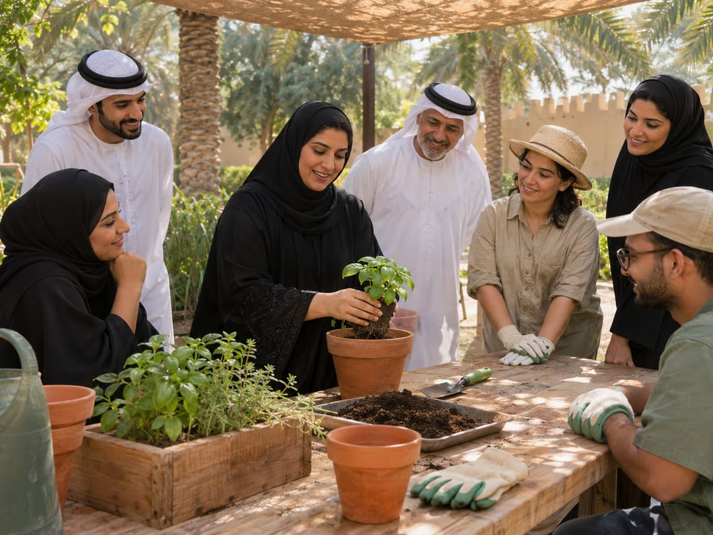

ورشٌ شهرية
ساعتان تتعلّم فيهما الأساس: التربة، والريّ، واختيار ما يناسب حرارة العين. مجّانيةٌ بالكامل.
مبادرةٌ تطوّعية في العين تساعدك على تحويل سطحك أو فناءك إلى حديقةٍ منزلية — بورشةٍ تحضرها، وشتلةٍ تأخذها، ومتطوّعٍ يركّب لك أوّل حوضٍ مجاناً.

لا نبيع شيئاً. نحن متطوّعون، وما نأخذه يغطّي كلفة الشتلات وحدها.
ساعتان تتعلّم فيهما الأساس: التربة، والريّ، واختيار ما يناسب حرارة العين. مجّانيةٌ بالكامل.
شتلاتٌ نُكثرها بأنفسنا، ونختارها لما يُزرع في شهرها — فلا تشتري نبتةً تموت بعد أسبوعين.
أصعبُ خطوةٍ هي الأولى. فيأتيك متطوّعٌ منّا ويركّب معك أوّل حوضٍ في بيتك، مجّاناً.
ثلاث دقائق من سطحٍ فارغ إلى أوّل حصاد.
«ابدأ بحوضٍ واحد» — ورشةٌ للمبتدئين تماماً.
